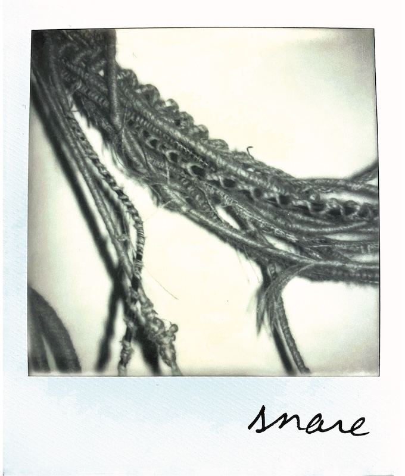

Artist Talk: Heather Mekkelson: snare
Please join us for an artist’s talk on Saturday, May 23rd. Mekkelson’s bass note snare emerges simultaneously from two galleries on opposite ends of Chicago.
65GRAND in the North Side neighborhood of Humboldt Park, features bass note. Sixteen miles away, in the South Side Morgan Park neighborhood, boundary presents snare.
Heather Mekkelson uses all forms of art but finds sculpture to be the best for speculating on questions with no clear answers. She suspects it comes from thinking through her hands. The work Mekkelson makes has been exhibited throughout Chicago in galleries like 65GRAND and 4th Ward Project Space, as well as places beyond like museums and street poles, and that one time in a medicine cabinet. People have written over the years about what Mekkelson does and/or how she thinks. Some examples can be found in print, in Art Journal and Aperture, and online at Artforum, Art21 Magazine, and Visual Art Source. Podcast interviews are available for listening with Bad at Sports and Studio Break. Mekkelson has received support for her work with fellowships, grants and awards from Artadia, the Illinois Arts Council, the Chicago Department of Cultural Affairs, and the institutions she has served.